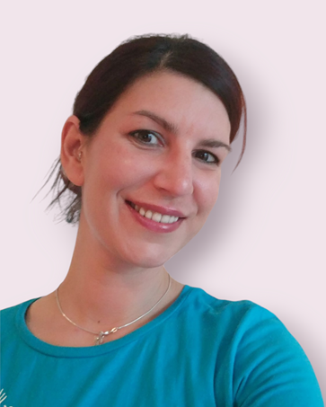
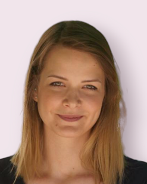
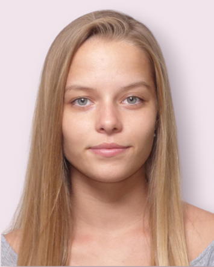

Farkas Boglárka |
Hegyi Kata |
Juhászné Székely Ágnes |
|  |  | ||
Tekler Szilvia |
Leitold Orsolya |
Richter Roland |
Bartha Eszter |
|  | |||
Pronk Alícia |
Garami Katalin |
Székelyhidi Blanka |
Novák Emese |
Pásztor Andrea |
Galánfi Andrea |
Kovács Heni |
Heindl-Kovács Anna |